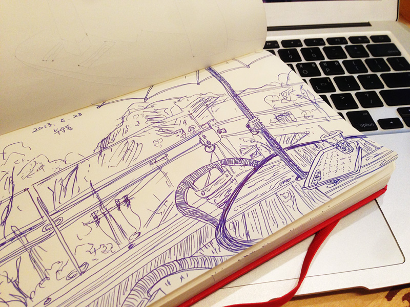
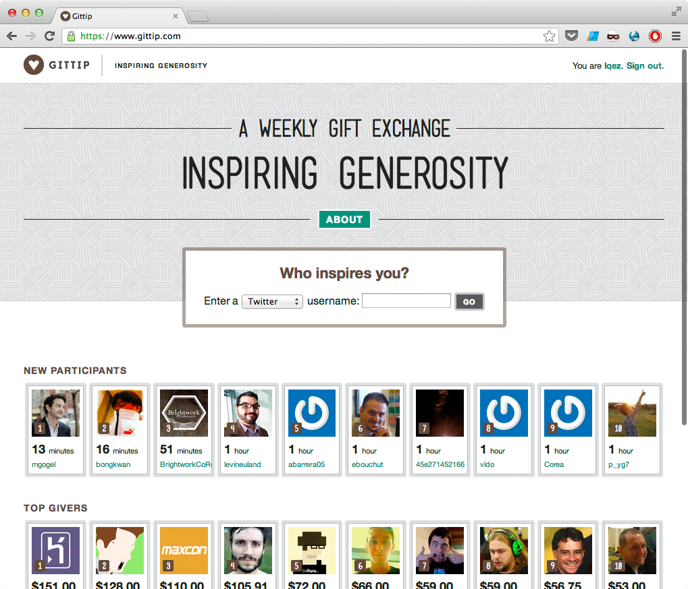

뭘 하고 사는지 괜히 바쁜것 같아, 하루 일과를 정리해보았다.
- 집에서 출발, 회사까지 걸어서 출근하기.
- 신규 입사자 면담.
- VPN 설정 수정.
- 사내 서버실에서 랜선 교체작업, 케이블 정리, 서버 설치.
- 사내 서버실 냉각 / 경보 장치 관련하여 짧은 미팅.
- 신규 API 서비스 코드 리뷰.
- 기존 API 서비스의 pagination 관련 토론.
- N사와 3세대 프로젝터 ...
뭘 하고 사는지 괜히 바쁜것 같아, 하루 일과를 정리해보았다.

언제부턴가 생일에 특별한 의미를 부여하거나, 챙겨서 뭘 하진 않게 되었다. 어차피 날짜라는 건 연속적인 시간을 인간의 기준에 맞춰 불연속적인 개념으로 부르는 것일 뿐이라고 생각한다. 하지만 오늘은 어쩐지 회사 창업 후 달라진 모습을 기록해보고 싶다.
사실 거의 10년간 다니던 회사를 그만두고 지금의 일을 시작하는데 우아한 동기나 굳은 마음가짐이 있었던 건 아니다 ...
read more얼마 전, Schema Migrations for Django 라는 오픈소스 프로젝트 계획에 대한 모금 활동이 킥스타터에서 큰 성공을 거뒀다. 이제까지 오픈소스를 사용하면서 개발한 이들에게 고마움을 표시하는 방법은 해당 프로젝트를 열심히 사용하며, 버그 제보, 번역, 기능 추가 또는 사용기 발표 정도 밖에 없다고 생각했는데, '금전적인' 후원도 가능하다는 것을 알게 되었다.

read more@drypot 님이 의지를 불태워 http://rapixel.com 을 만들고 있는 것에 감명받아, 예전부터 만들고 싶었던 사진 저장/공유 사이트 아이디어를 구체화 해보았다.
Page 1 / 2 »